I recently received my Ph.D. in Computer Science & Engineering from the Paul G. Allen School at the University of Washington, where I was very fortunate to be advised by Noah Smith and a member of the ARK research group. My research interests are broadly in the areas of natural language processing and machine learning. Topics I've worked on include scientific knowledge graph completion, domain adaptation, model merging, instruction-following performance prediction, and factual knowledge acquisition through pretraining.
In the past, I worked with Emily Fox on statistical machine learning methods for time series applied to neuroimaging data. I was fortunate to have been funded by an IGERT fellowship in Big Data and Data Science from 2017-2019. My undergraduate research was in the Brain-Machine Interface Systems Lab at UC Berkeley, advised by Jose Carmena.
Publications
Natural Language Processing
|
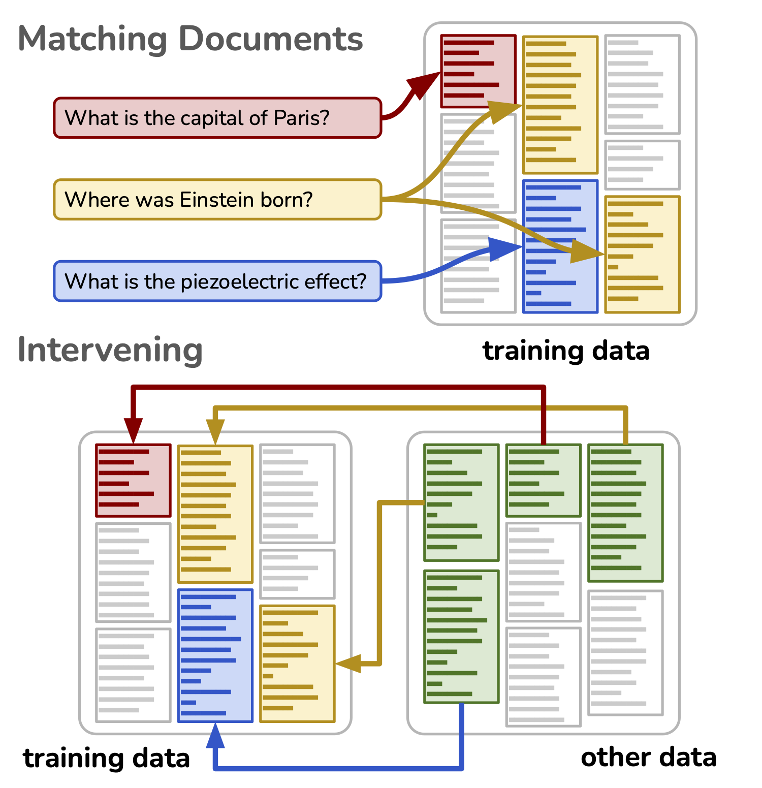 |
Rewriting History: A Recipe for Interventional Analyses to Study Data Effects on Model Behavior Rahul Nadkarni, Yanai Elazar*, Hila Gonen*, Noah A. Smith Transactions of the Association for Computational Linguistics (TACL, to appear), 2026 paper arXiv code |
|
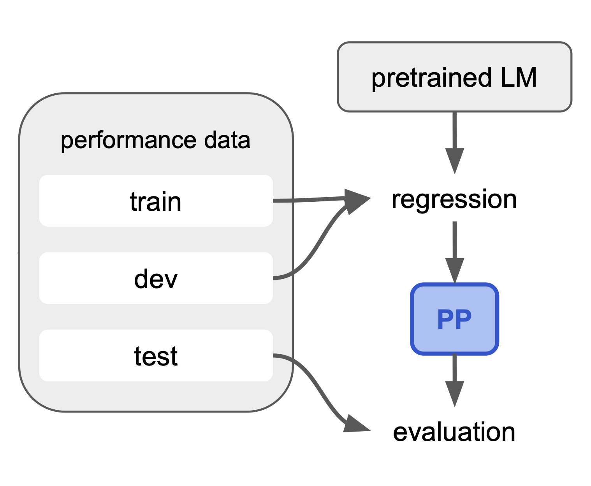 |
Third-Party Language Model Performance Prediction from Instruction Rahul Nadkarni, Yizhong Wang, Noah A. Smith arXiv, 2024 paper arXiv code |
|
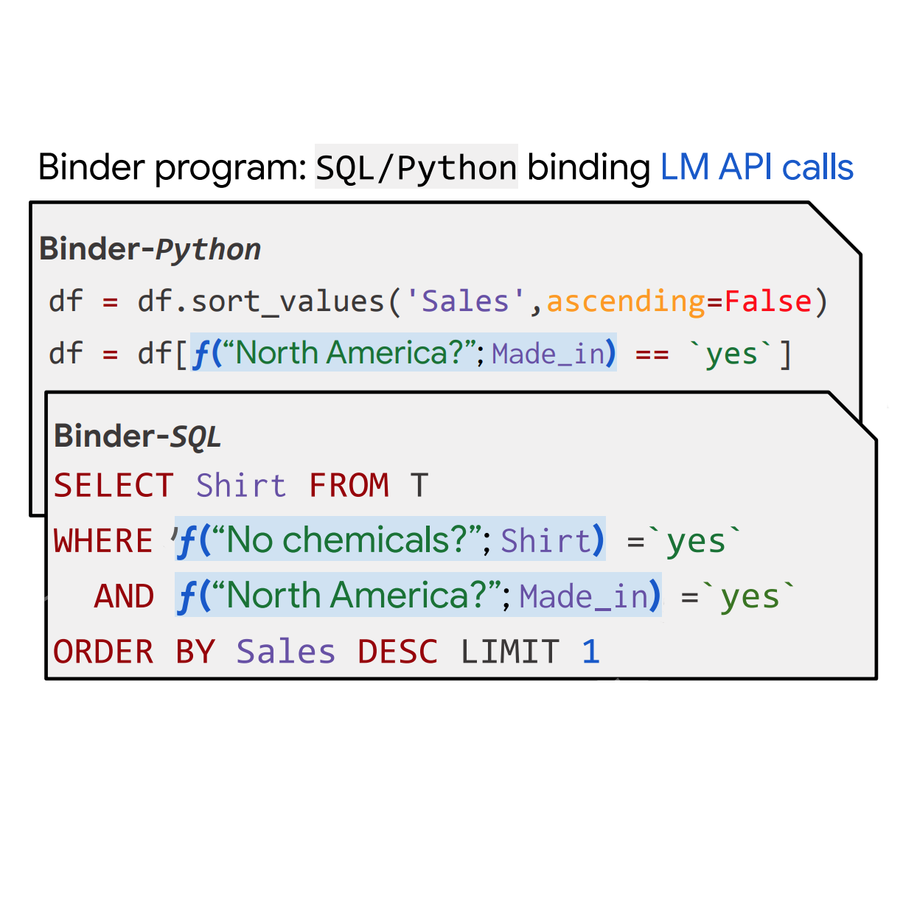 |
Binding Language Models in Symbolic Languages Zhoujun Cheng*, Tianbao Xie*, Peng Shi, Chengzu Li, Rahul Nadkarni, Yushi Hu, Caiming Xiong, Dragomir Radev, Mari Ostendorf, Luke Zettlemoyer, Noah A. Smith, Tao Yu International Conference on Learning Representations (ICLR), 2023 paper arXiv code |
|
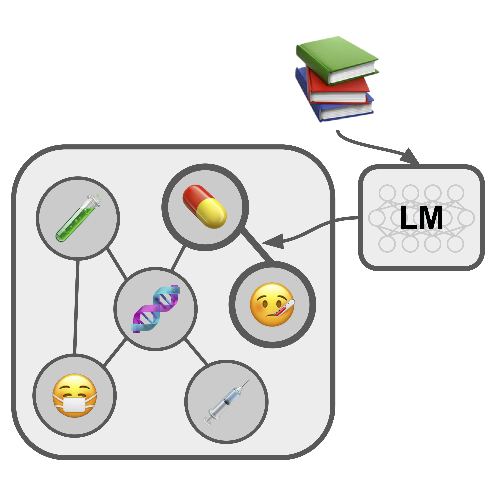 |
Scientific Language Models for Biomedical Knowledge Base Completion: An Empirical Study Rahul Nadkarni, David Wadden, Iz Beltagy, Noah A. Smith, Hannaneh Hajishirzi, and Tom Hope Automated Knowledge Base Construction (AKBC), 2021 paper arXiv code video |
Machine Learning & Neuroscience
|
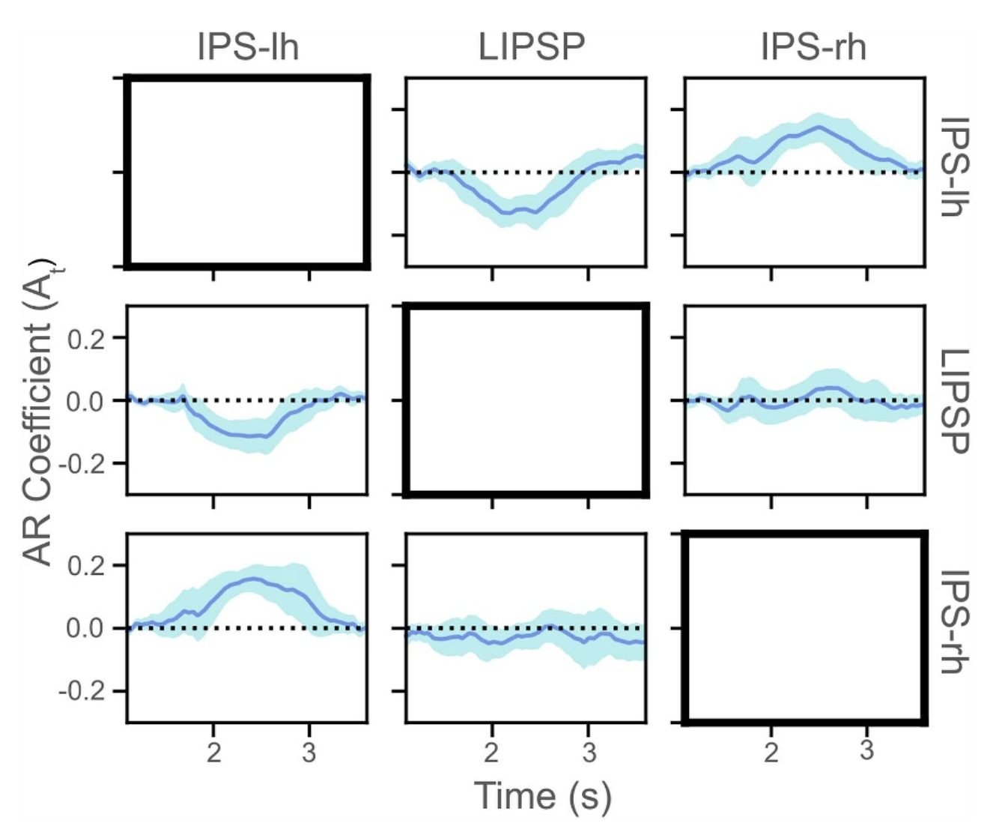 |
Using a linear dynamic system to measure functional connectivity from M/EEG Jordan Drew, Nicholas Foti, Rahul Nadkarni, Eric Larson, Emily Fox, Adrian KC Lee Journal of Neural Engineering, 21 (2024) paper |
|
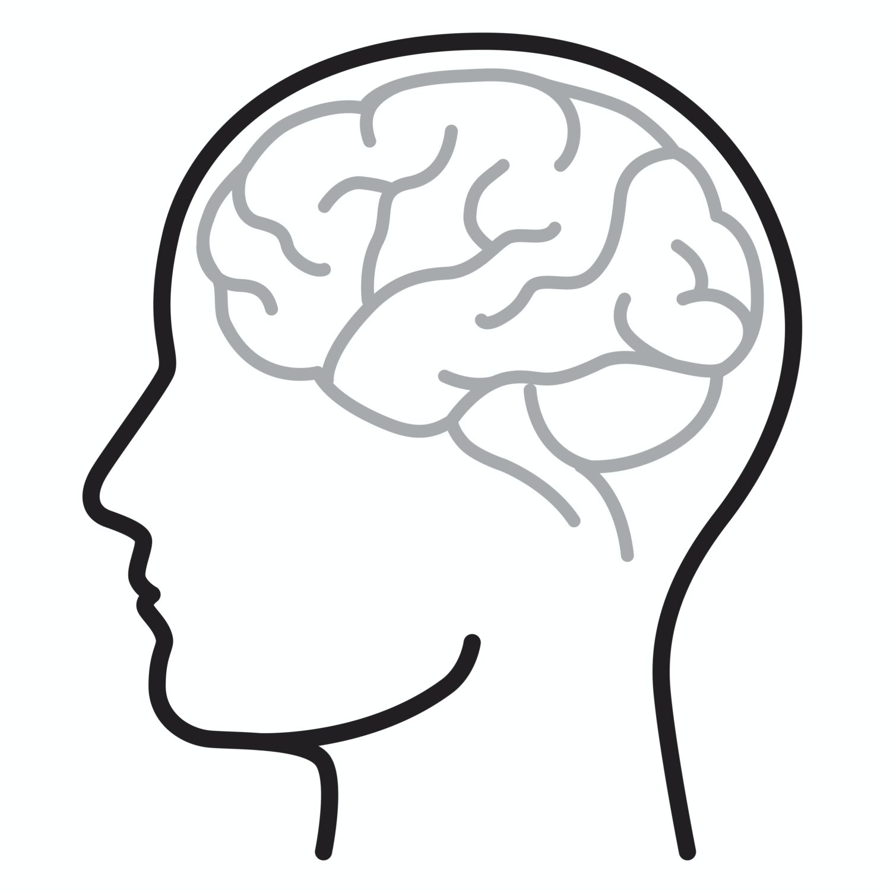 |
Dynamic functional connectivity in auditory attention task Jordan Drew, Eric Larson, Nicholas Foti, Rahul Nadkarni, Emily Fox, Adrian KC Lee The Journal of the Acoustical Society of America, 2021 abstract |
|
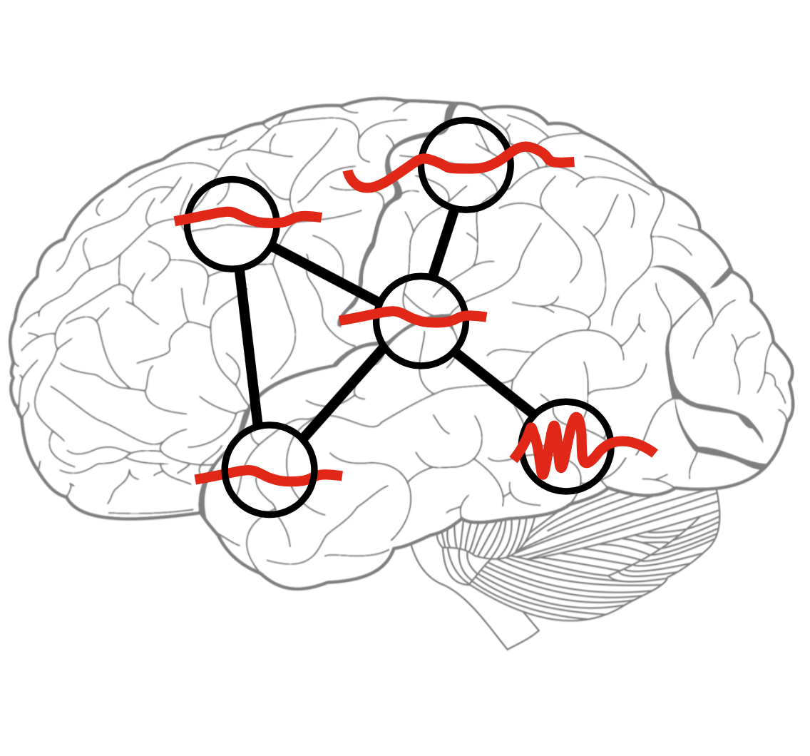 |
A hierarchical state-space model with Gaussian process dynamics for functional connectivity estimation Rahul Nadkarni, Nicholas J. Foti, Adrian KC Lee, and Emily B. Fox NeurIPS Workshop on Learning Meaningful Representations of Life, 2019 abstract poster |
|
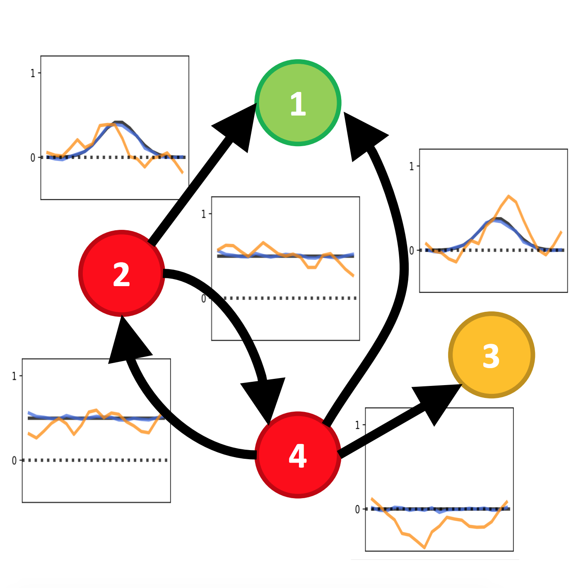 |
Robust recovery of time-varying functional connectivity in MEG Rahul Nadkarni, Nicholas J. Foti, and Emily B. Fox tech report, 2018 paper |
|
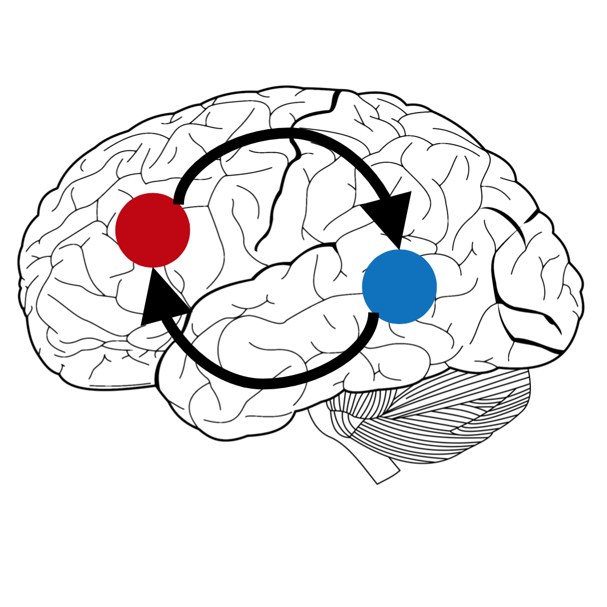 |
Learning dynamic functional connectivity networks from infant magnetoencephalography data Rahul Nadkarni, Nicholas J. Foti, and Emily B. Fox NeurIPS BigNeuro Workshop, 2017 abstract poster |
|
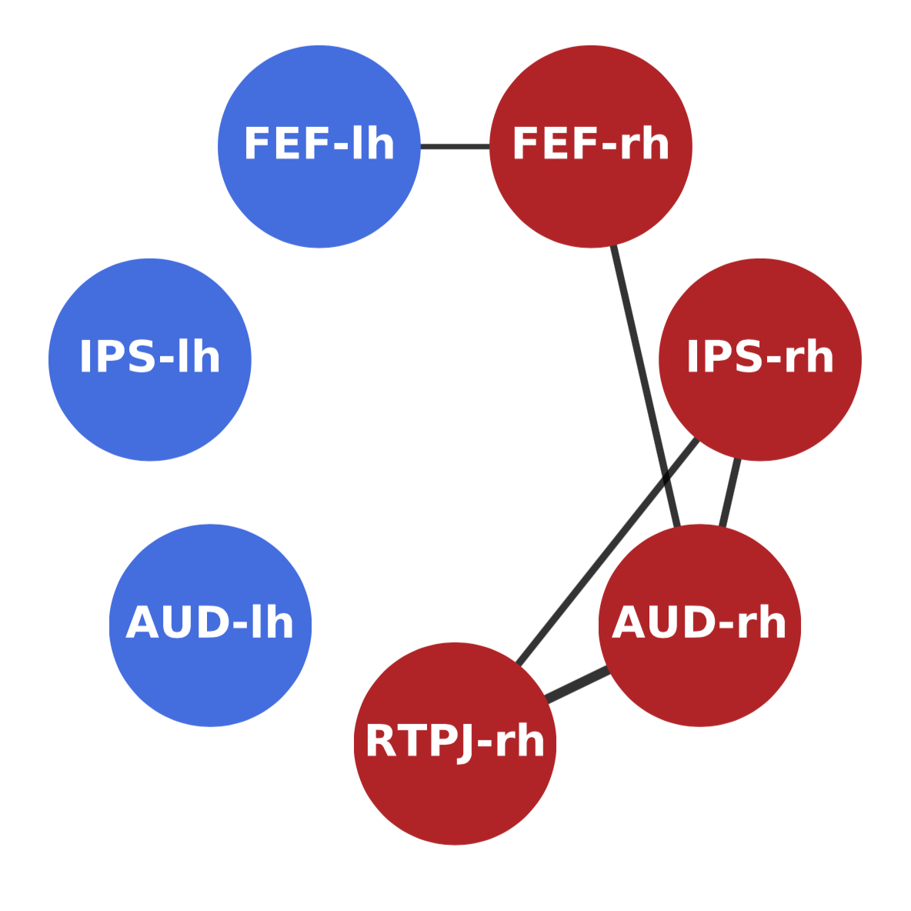 |
Sparse plus low-rank graphical models of time series to infer functional connectivity from MEG recordings Rahul Nadkarni, Nicholas J. Foti, Adrian KC Lee, and Emily B. Fox tech report, 2017 paper |
|
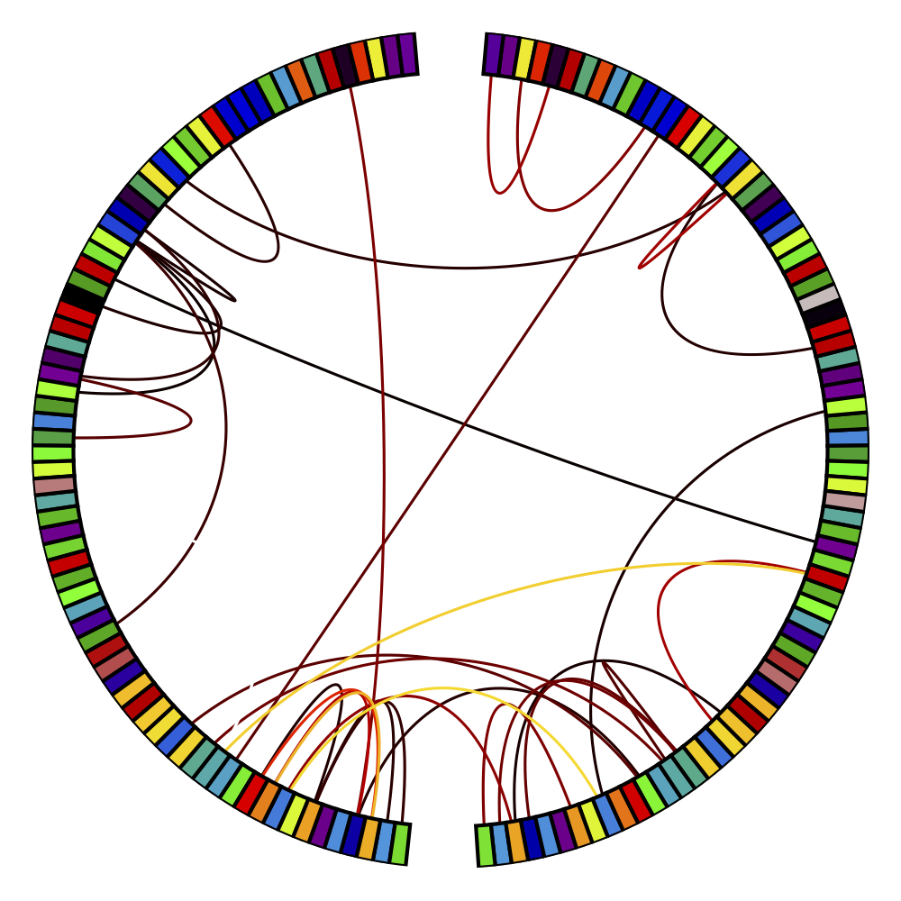 |
Sparse plus low-rank graphical models of time series for functional connectivity in MEG Nicholas J. Foti, Rahul Nadkarni, Adrian KC Lee, and Emily B. Fox SIGKDD Workshop on Mining and Learning from Time Series, 2016 paper slides talk |
Professional Experience
|
Facebook SWE Intern, Machine Learning (Ph.D.) June – September 2021 |
|
|
Google Software Engineering Intern, Ph.D. June – September 2017 |
Graduate Coursework
- Natural Language Processing (CSE 517)
- Machine Learning for Big Data (CSE 547)
- Computer Vision (CSE 576)
- Graphical Models (CSE 515)
- Statistical Inference (STAT 512)
- Convex Optimization (EE 578)
- Online and Adaptive Methods for Machine Learning (CSE 599I)
- Computational Neuroscience (CSE 528)
- Algorithms (CSE 527)
- Databases (CSE 544)
Teaching Experience
- TA, Data Structures and Algorithms (CSE 373) - Autumn 2015, Winter 2016
- TA, Introduction to Artificial Intelligence (CSE 415) - Spring 2016, Autumn 2020